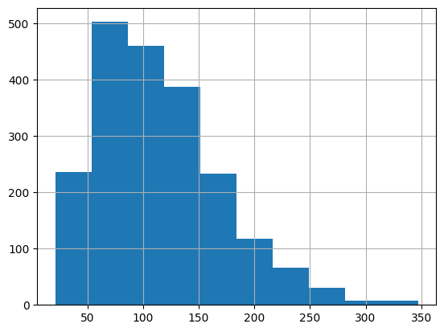
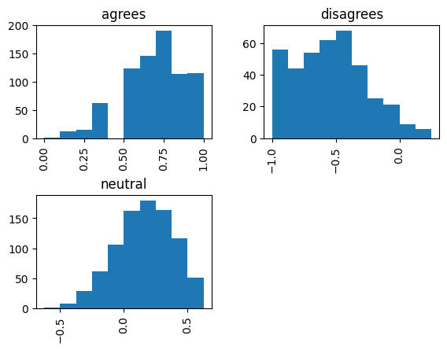
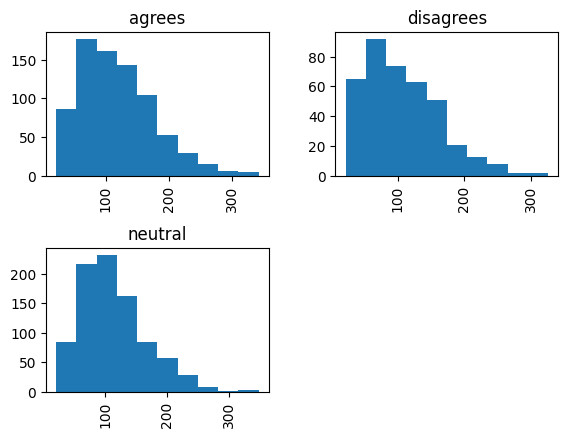
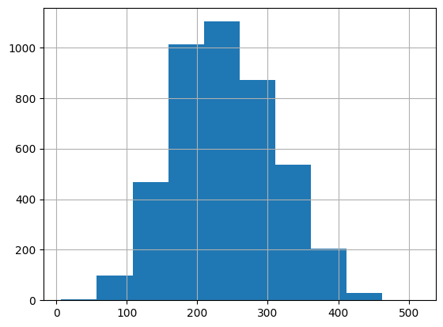
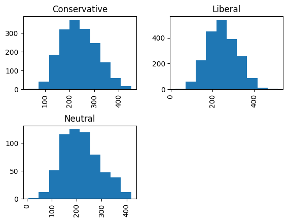

SEED = 2306406Checkpoint
import pandas as pd
url = "https://raw.githubusercontent.com/yiweiluo/GWStance/refs/heads/master/3_stance_detection/1_MTurk/full_annotations.tsv"
df_raw = pd.read_csv(url, sep = "\t") # Careful here, this document is a tsv (separator="\t" and not a csv (separator = ",")
df_raw.head()| Unnamed: 0 | MACE_pred | av_rating | sentence | worker_0 | worker_1 | worker_2 | worker_3 | worker_4 | worker_5 | worker_6 | worker_7 | round | batch | sent_id | disagree | agree | neutral | |
|---|---|---|---|---|---|---|---|---|---|---|---|---|---|---|---|---|---|---|
| 0 | 0 | disagrees | -1.000 | Global warming is a hoax. | disagrees | disagrees | disagrees | disagrees | disagrees | disagrees | disagrees | disagrees | 1 | 0 | s0 | NaN | NaN | NaN |
| 1 | 1 | neutral | 0.375 | Alarming levels of sea level rise are predicte... | neutral | neutral | neutral | agrees | agrees | neutral | neutral | agrees | 1 | 0 | s1 | NaN | NaN | NaN |
| 2 | 2 | neutral | 0.000 | Over the past several years, the United States... | neutral | neutral | neutral | neutral | neutral | neutral | neutral | neutral | 1 | 0 | s2 | NaN | NaN | NaN |
| 3 | 3 | agrees | 1.000 | Global warming is happening and it will be dan... | agrees | agrees | agrees | agrees | agrees | agrees | agrees | agrees | 1 | 0 | s3 | NaN | NaN | NaN |
| 4 | 4 | neutral | 0.000 | Some icebergs are cute. | neutral | neutral | neutral | neutral | neutral | neutral | neutral | neutral | 1 | 0 | s4 | NaN | NaN | NaN |
t = df_raw.groupby(["sent_id"])["sentence"].agg(
howMany = lambda X : len(X),
howManyDifferent = lambda X : len(X.unique()),
isOneSentence = lambda X : len(X.unique()) == 1,
agg= lambda X : '\n\n'.join(X)
)
t["Unique sentence"] = t["howMany"] == t["howManyDifferent"]
t| howMany | howManyDifferent | isOneSentence | agg | Unique sentence | |
|---|---|---|---|---|---|
| sent_id | |||||
| s0 | 50 | 1 | True | Global warming is a hoax.\n\nGlobal warming is... | False |
| s1 | 50 | 1 | True | Alarming levels of sea level rise are predicte... | False |
| s2 | 50 | 1 | True | Over the past several years, the United States... | False |
| s3 | 50 | 1 | True | Global warming is happening and it will be dan... | False |
| s4 | 50 | 1 | True | Some icebergs are cute.\n\nSome icebergs are c... | False |
| t0 | 50 | 50 | False | Warmer-than-normal sea surface temperatures ar... | True |
| t1 | 50 | 50 | False | We will continue to rely in part on fossil fue... | True |
| t10 | 50 | 50 | False | The actual rise in sea levels measured only 1.... | True |
| t11 | 50 | 50 | False | Claims of global warming have been greatly exa... | True |
| t12 | 50 | 50 | False | The Intergovernmental Panel on Climate Change ... | True |
| t13 | 50 | 50 | False | Evidence now leans against global warming resu... | True |
| t14 | 50 | 50 | False | Flooding has been going on forever.\n\nThere i... | True |
| t15 | 50 | 50 | False | Simply reducing emissions will not sufficientl... | True |
| t16 | 50 | 50 | False | Climate deniers blame global warming on aliens... | True |
| t17 | 50 | 50 | False | Global warming is inevitably going to be, at b... | True |
| t18 | 50 | 50 | False | Some parts of the world the world, such as the... | True |
| t19 | 50 | 50 | False | If carbon dioxide emissions continue to rise b... | True |
| t2 | 50 | 50 | False | The study is one more example that you can get... | True |
| t20 | 50 | 50 | False | Millions more people around the world are thre... | True |
| t21 | 50 | 50 | False | 45 % of the general public view perceived glob... | True |
| t22 | 50 | 50 | False | Two billion people may be displaced by rising ... | True |
| t23 | 50 | 50 | False | Global warming is real and threatening.\n\nCli... | True |
| t24 | 50 | 50 | False | There is a danger that we can get used to glob... | True |
| t25 | 50 | 50 | False | Doing so will be central for getting global wa... | True |
| t26 | 50 | 50 | False | Global sea-level rise is both undeniable and c... | True |
| t27 | 50 | 50 | False | Global warming isn’t happening.\n\nData on how... | True |
| t28 | 50 | 50 | False | Carbon dioxide will hit another record high in... | True |
| t29 | 50 | 50 | False | You now have a global marketplace for clean en... | True |
| t3 | 50 | 50 | False | Fighting global warming, the stated purpose of... | True |
| t30 | 40 | 40 | False | Global warming had ensured that the incidence ... | True |
| t31 | 40 | 40 | False | Severe climate change is coming our way, and o... | True |
| t32 | 40 | 40 | False | There is a clear connection between rising glo... | True |
| t33 | 40 | 40 | False | Warming temperatures in Pacific Ocean waters o... | True |
| t34 | 40 | 40 | False | Global warming is a major problem and deservin... | True |
| t35 | 40 | 40 | False | The weeds that produce many allergens have ada... | True |
| t36 | 40 | 40 | False | Europe’s financial losses related to flooding,... | True |
| t37 | 40 | 40 | False | Climate scientists themselves are increasingly... | True |
| t38 | 40 | 40 | False | A mini ice age could hit UK by 2030.\n\nGlobal... | True |
| t39 | 40 | 40 | False | Global emissions will continue to rise at a to... | True |
| t4 | 50 | 50 | False | Four in ten Americans (40%) have personally ex... | True |
| t40 | 20 | 20 | False | The Southern Hemisphere must be balancing the ... | True |
| t41 | 20 | 20 | False | Christiana Figueres, executive secretary of th... | True |
| t42 | 20 | 20 | False | Existing national pledges to restrict greenhou... | True |
| t43 | 20 | 20 | False | Some legitimate uncertainty about the human co... | True |
| t44 | 20 | 20 | False | Global warming could result in expensive incre... | True |
| t45 | 10 | 10 | False | Ending climate change would require `entire so... | True |
| t46 | 10 | 10 | False | The United States to exceed its 2025 commitmen... | True |
| t47 | 10 | 10 | False | Climate change is a cult.\n\nCity officials ci... | True |
| t48 | 10 | 10 | False | A 2 percent variation in H2O equals any climat... | True |
| t49 | 10 | 10 | False | Republicans need to appeal to young people who... | True |
| t5 | 50 | 50 | False | Fossil fuels will be used for the foreseeable ... | True |
| t6 | 50 | 50 | False | Humans have a role and therefore as a matter o... | True |
| t7 | 50 | 50 | False | The global warming has become a new religion.\... | True |
| t8 | 50 | 50 | False | The global warming crowd can’t get any crazier... | True |
| t9 | 50 | 50 | False | Global warming is mainly caused by human activ... | True |
df = df_raw.loc[
~df_raw["sent_id"].str.startswith("s"),
["sentence", "MACE_pred", "av_rating"]
]
df = df.rename(columns={"MACE_pred" : "label_text"})
df| sentence | label_text | av_rating | |
|---|---|---|---|
| 5 | Warmer-than-normal sea surface temperatures ar... | agrees | 0.625 |
| 6 | We will continue to rely in part on fossil fue... | neutral | 0.000 |
| 7 | The actual rise in sea levels measured only 1.... | neutral | 0.000 |
| 8 | Claims of global warming have been greatly exa... | disagrees | -1.000 |
| 9 | The Intergovernmental Panel on Climate Change ... | neutral | -0.125 |
| ... | ... | ... | ... |
| 2295 | Agriculture, in general, is responsible for a ... | neutral | 0.375 |
| 2296 | Hiring a White House "climate change czar" wou... | agrees | 0.750 |
| 2297 | More carbon is being released than stored. | neutral | 0.250 |
| 2298 | New laws are needed to crack down on climate a... | disagrees | -0.750 |
| 2299 | Scaring young people young people into believi... | disagrees | -0.750 |
2050 rows × 3 columns
df.groupby(["label_text"]).size()label_text
agrees 780
disagrees 391
neutral 879
dtype: int64df["sentence-len"] = df["sentence"].apply(len)
df["sentence-len"].hist()
df["sentence-len"].describe()count 2050.000000
mean 114.340488
std 55.721788
min 21.000000
25% 72.000000
50% 104.000000
75% 147.000000
max 347.000000
Name: sentence-len, dtype: float64
df.hist(column="av_rating", by="label_text")array([[<Axes: title={'center': 'agrees'}>,
<Axes: title={'center': 'disagrees'}>],
[<Axes: title={'center': 'neutral'}>, <Axes: >]], dtype=object)
df.hist(column = "sentence-len", by="label_text")
df.groupby("label_text")["sentence-len"].describe()| count | mean | std | min | 25% | 50% | 75% | max | |
|---|---|---|---|---|---|---|---|---|
| label_text | ||||||||
| agrees | 780.0 | 118.393590 | 58.178625 | 22.0 | 74.75 | 108.0 | 153.0 | 342.0 |
| disagrees | 391.0 | 107.437340 | 56.278525 | 22.0 | 64.00 | 97.0 | 143.0 | 325.0 |
| neutral | 879.0 | 113.814562 | 52.914260 | 21.0 | 76.00 | 104.0 | 144.0 | 347.0 |

df.sort_values("sentence-len").head(2)["sentence"].unique()<ArrowStringArray>
['The seas have warmed.']
Length: 1, dtype: strdf["sentence-len"] = df["sentence"].apply(len)
df["sentence-len"].hist()
df.loc[df["sentence-len"] < 50,:].sort_values("sentence-len")| sentence | leaning | sentence-len | |
|---|---|---|---|
| 1715 | Gr \/ . | Neutral | 7 |
| 153 | Howard Dean ( D-Vt . ) | Liberal | 22 |
| 3749 | Senator James Inhofe ( R-Okla . ) | Conservative | 33 |
df.loc[df["sentence-len"] >= 400, :]| sentence | leaning | sentence-len | |
|---|---|---|---|
| 217 | In the new security environment , the United S... | Liberal | 412 |
| 306 | As to this , Dr. Drexler offers this short lis... | Neutral | 405 |
| 319 | Members of the Creative Class are drawn to suc... | Liberal | 404 |
| 449 | Low capital costs are the result of a lot of p... | Conservative | 408 |
| 520 | The Obama administration , together with assor... | Conservative | 434 |
| 557 | Most local school districts must contend with ... | Conservative | 417 |
| 706 | Under the circumstances , President Obama migh... | Neutral | 418 |
| 713 | Del Vecchio 's words manifest not merely an et... | Liberal | 409 |
| 871 | Abstract : For years , feminists have been war... | Liberal | 400 |
| 1224 | While experts will continue to debate the exac... | Liberal | 400 |
| 1240 | Yet despite that campaign assertion and the fa... | Conservative | 418 |
| 1290 | Here , Associate Director ( James Tweeny ) out... | Conservative | 437 |
| 1318 | The Inter Press Service reported that these co... | Liberal | 482 |
| 1433 | Illegal aliens are causing a financial drain ;... | Conservative | 416 |
| 1470 | The result has been a system that , according ... | Liberal | 415 |
| 1479 | In defending the latest incursion into airline... | Conservative | 412 |
| 1540 | The proposal also includes creating an orderly... | Liberal | 418 |
| 1660 | Here , Associate Director Tweeny outlines the ... | Conservative | 423 |
| 1712 | However , investors became unmoored from the e... | Conservative | 450 |
| 1741 | Our children are not learning because the pres... | Liberal | 413 |
| 1818 | Multinational bodies like NAFTA , CAFTA , and ... | Conservative | 424 |
| 1822 | Market and patient-based health care reform pr... | Liberal | 401 |
| 1915 | Between credit-card usage and using store-spon... | Liberal | 513 |
| 2018 | In this telling , school vouchers are taxpayer... | Liberal | 422 |
| 2088 | Abstract : ( ... ) a range of public policies ... | Liberal | 404 |
| 2144 | In a book he published last year laying out a ... | Liberal | 423 |
| 2243 | The dominance of such worldviews -- to the det... | Conservative | 416 |
| 2415 | Sex outside a monogamous , life-long relations... | Conservative | 431 |
| 2464 | Many of the Republican Party leaders are also ... | Liberal | 442 |
| 2470 | There is nothing inherently conservative about... | Conservative | 420 |
| 2537 | But the cost of servicing that debt could grow... | Conservative | 404 |
| 2676 | Without the protection of the natural forest t... | Liberal | 402 |
| 2761 | Since the collapse of the subprime mortgage ma... | Liberal | 430 |
| 2837 | The U.S.-led occupation privatized large porti... | Liberal | 441 |
| 2852 | While the Massachusetts Attorney General 's Of... | Liberal | 412 |
| 2866 | While `` merit pay '' is a code word for evalu... | Liberal | 429 |
| 2895 | Most startling , Scalia observed that in an ``... | Liberal | 402 |
| 2991 | Rather than cultivating a moral society and in... | Conservative | 404 |
| 3086 | All of this -- skyrocketing costs , dumbed-dow... | Conservative | 416 |
| 3119 | Abstract : The performance of state government... | Conservative | 410 |
| 3139 | That movement 's home base is Seattle 's Disco... | Liberal | 447 |
| 3148 | In its eagerness to promote the teaching of cr... | Liberal | 407 |
| 3594 | He suggested decentralizing government to sett... | Conservative | 422 |
| 3639 | Echoing the recently released report from the ... | Liberal | 405 |
| 3651 | In reality , the national debt , when all the ... | Conservative | 414 |
| 3739 | Eliminating subsidies and legal privileges for... | Conservative | 415 |
| 3752 | Universities always emphasize the importance o... | Liberal | 402 |
| 3830 | The proposal also includes creating an orderly... | Liberal | 418 |
| 4099 | The financial crisis through which we are stil... | Liberal | 404 |
| 4117 | And , in trying to enlist the courts in their ... | Liberal | 400 |
| 4144 | In May 1933 , U.S. Senate Banking Committee co... | Liberal | 410 |
df.hist("sentence-len", by="leaning")array([[<Axes: title={'center': 'Conservative'}>,
<Axes: title={'center': 'Liberal'}>],
[<Axes: title={'center': 'Neutral'}>, <Axes: >]], dtype=object)
df = df.loc[df["sentence-len"] > 50,:]
df["ID"] = [f"ID-{i:04}" for i in range(len(df))]
df = df.set_index("ID")
df| sentence | leaning | sentence-len | |
|---|---|---|---|
| ID | |||
| ID-0000 | Union shop proponents point out that the `` fr... | Conservative | 228 |
| ID-0001 | I started this section talking about how good ... | Conservative | 92 |
| ID-0002 | He would end foreign aid and abolish five Cabi... | Conservative | 381 |
| ID-0003 | Here 's how the scheme works : miss the requir... | Conservative | 181 |
| ID-0004 | As President , Barack Obama will create a pris... | Liberal | 309 |
| ... | ... | ... | ... |
| ID-4318 | Our plan was straightforward : Make private-se... | Liberal | 370 |
| ID-4319 | Only the Western occupiers have the planes to ... | Liberal | 295 |
| ID-4320 | What 's more , virtually every subsidiary Repu... | Liberal | 258 |
| ID-4321 | Sometimes they even dole out for scientific ex... | Liberal | 222 |
| ID-4322 | Another aspect of American exceptionalism we a... | Conservative | 162 |
4323 rows × 3 columns
def preprocess_text(text: str):
if not(isinstance(text, str)):
return pd.NA
return (
text
.replace("``", '"')
.replace("''", '"')
.replace(" ,", ",")
.replace(" .", ".")
.replace(" !", "!")
.replace(" ?", "?")
.replace(" :", ":")
.replace(" 's", "'s")
)
df["sentence-preprocessed"] = df["sentence"].apply(preprocess_text)df| sentence | leaning | sentence-len | sentence-preprocessed | |
|---|---|---|---|---|
| ID | ||||
| ID-0000 | Union shop proponents point out that the `` fr... | Conservative | 228 | Union shop proponents point out that the " fre... |
| ID-0001 | I started this section talking about how good ... | Conservative | 92 | I started this section talking about how good ... |
| ID-0002 | He would end foreign aid and abolish five Cabi... | Conservative | 381 | He would end foreign aid and abolish five Cabi... |
| ID-0003 | Here 's how the scheme works : miss the requir... | Conservative | 181 | Here's how the scheme works: miss the required... |
| ID-0004 | As President , Barack Obama will create a pris... | Liberal | 309 | As President, Barack Obama will create a priso... |
| ... | ... | ... | ... | ... |
| ID-4318 | Our plan was straightforward : Make private-se... | Liberal | 370 | Our plan was straightforward: Make private-sec... |
| ID-4319 | Only the Western occupiers have the planes to ... | Liberal | 295 | Only the Western occupiers have the planes to ... |
| ID-4320 | What 's more , virtually every subsidiary Repu... | Liberal | 258 | What's more, virtually every subsidiary Republ... |
| ID-4321 | Sometimes they even dole out for scientific ex... | Liberal | 222 | Sometimes they even dole out for scientific ex... |
| ID-4322 | Another aspect of American exceptionalism we a... | Conservative | 162 | Another aspect of American exceptionalism we a... |
4323 rows × 4 columns
dsd = ds.train_test_split(test_size = 0.2, shuffle=True, seed=SEED)
# Create an eval dataset
temp = dsd["train"].train_test_split()
dsd["train"] = temp["train"]
dsd["eval"] = temp["test"]
dsdDatasetDict({
train: Dataset({
features: ['text', 'labels_text', 'ID'],
num_rows: 2593
})
test: Dataset({
features: ['text', 'labels_text', 'ID'],
num_rows: 865
})
eval: Dataset({
features: ['text', 'labels_text', 'ID'],
num_rows: 865
})
})labels = list(df["leaning"].unique())
num_labels = len(labels)
id2label = {id:label for id, label in enumerate(labels)}
label2id = {label:id for id, label in enumerate(labels)}
print(f'''
num_labels : {num_labels}
id2label : {id2label}
label2id : {label2id}
'''
)
num_labels : 3
id2label : {0: 'Conservative', 1: 'Liberal', 2: 'Neutral'}
label2id : {'Conservative': 0, 'Liberal': 1, 'Neutral': 2}
from transformers import AutoModel, AutoModelForSequenceClassification
# MODEL_NAME = "distilbert/distilbert-base-uncased"
MODEL_NAME = "google-bert/bert-base-uncased"
classif_model = AutoModelForSequenceClassification.from_pretrained(
MODEL_NAME,
num_labels=num_labels,
id2label=id2label,
label2id=label2id
)
classif_modelSome weights of BertForSequenceClassification were not initialized from the model checkpoint at google-bert/bert-base-uncased and are newly initialized: ['classifier.bias', 'classifier.weight']
You should probably TRAIN this model on a down-stream task to be able to use it for predictions and inference.BertForSequenceClassification(
(bert): BertModel(
(embeddings): BertEmbeddings(
(word_embeddings): Embedding(30522, 768, padding_idx=0)
(position_embeddings): Embedding(512, 768)
(token_type_embeddings): Embedding(2, 768)
(LayerNorm): LayerNorm((768,), eps=1e-12, elementwise_affine=True)
(dropout): Dropout(p=0.1, inplace=False)
)
(encoder): BertEncoder(
(layer): ModuleList(
(0-11): 12 x BertLayer(
(attention): BertAttention(
(self): BertSdpaSelfAttention(
(query): Linear(in_features=768, out_features=768, bias=True)
(key): Linear(in_features=768, out_features=768, bias=True)
(value): Linear(in_features=768, out_features=768, bias=True)
(dropout): Dropout(p=0.1, inplace=False)
)
(output): BertSelfOutput(
(dense): Linear(in_features=768, out_features=768, bias=True)
(LayerNorm): LayerNorm((768,), eps=1e-12, elementwise_affine=True)
(dropout): Dropout(p=0.1, inplace=False)
)
)
(intermediate): BertIntermediate(
(dense): Linear(in_features=768, out_features=3072, bias=True)
(intermediate_act_fn): GELUActivation()
)
(output): BertOutput(
(dense): Linear(in_features=3072, out_features=768, bias=True)
(LayerNorm): LayerNorm((768,), eps=1e-12, elementwise_affine=True)
(dropout): Dropout(p=0.1, inplace=False)
)
)
)
)
(pooler): BertPooler(
(dense): Linear(in_features=768, out_features=768, bias=True)
(activation): Tanh()
)
)
(dropout): Dropout(p=0.1, inplace=False)
(classifier): Linear(in_features=768, out_features=3, bias=True)
)classif_model.configBertConfig {
"architectures": [
"BertForMaskedLM"
],
"attention_probs_dropout_prob": 0.1,
"classifier_dropout": null,
"gradient_checkpointing": false,
"hidden_act": "gelu",
"hidden_dropout_prob": 0.1,
"hidden_size": 768,
"id2label": {
"0": "Conservative",
"1": "Liberal",
"2": "Neutral"
},
"initializer_range": 0.02,
"intermediate_size": 3072,
"label2id": {
"Conservative": 0,
"Liberal": 1,
"Neutral": 2
},
"layer_norm_eps": 1e-12,
"max_position_embeddings": 512,
"model_type": "bert",
"num_attention_heads": 12,
"num_hidden_layers": 12,
"pad_token_id": 0,
"position_embedding_type": "absolute",
"torch_dtype": "float32",
"transformers_version": "4.52.4",
"type_vocab_size": 2,
"use_cache": true,
"vocab_size": 30522
}from transformers import AutoTokenizer
tokenizer = AutoTokenizer.from_pretrained(MODEL_NAME)entry = [
"Hello World",
"This is a second query"
]
tokenizer_parameters = {
"truncation":True,
"padding":"max_length",
"max_length":400,
"return_tensors":"pt"
}
model_input = tokenizer(entry,**tokenizer_parameters)
base_model_output = classif_model.base_model(**model_input)
classif_model_output = classif_model(**model_input)
print(f'''
# model input keys: {', '.join(model_input)}
model input shape (pytorch tensor): {model_input["input_ids"].shape}
base model output keys: {', '.join(base_model_output)}
base model output last_hidden_state shape (pytorch tensor): {base_model_output.last_hidden_state.shape}
classification model output key: {', '.join(classif_model_output)}
classification model output logits shape (pytorch tensor): {classif_model_output.logits.shape}
''')
# model input keys: input_ids, token_type_ids, attention_mask
model input shape (pytorch tensor): torch.Size([2, 400])
base model output keys: last_hidden_state, pooler_output
base model output last_hidden_state shape (pytorch tensor): torch.Size([2, 400, 768])
classification model output key: logits
classification model output logits shape (pytorch tensor): torch.Size([2, 3])
from typing import Any
# TODO: make device choice better
def preprocess_dataset(row: dict[str:Any]):
tokenized_entry = tokenizer(row["text"], **tokenizer_parameters)
return {
**row.copy(),
"labels": int(label2id[row["labels_text"]]),
"attention_mask" : tokenized_entry["attention_mask"].reshape(-1).to(device = "mps"),
"input_ids" : tokenized_entry["input_ids"].reshape(-1).to(device="mps")
}
dsd = dsd.map(preprocess_dataset, batch_size=32)Map: 0%| | 0/2593 [00:00<?, ? examples/s]huggingface/tokenizers: The current process just got forked, after parallelism has already been used. Disabling parallelism to avoid deadlocks...
To disable this warning, you can either:
- Avoid using `tokenizers` before the fork if possible
- Explicitly set the environment variable TOKENIZERS_PARALLELISM=(true | false)
Map: 100%|██████████| 2593/2593 [00:04<00:00, 642.75 examples/s]
Map: 100%|██████████| 865/865 [00:01<00:00, 642.04 examples/s]
Map: 100%|██████████| 865/865 [00:01<00:00, 668.04 examples/s] from transformers import TrainingArguments, Trainer, DataCollatorWithPadding
training_arguments = TrainingArguments(
# Hyperparameters
num_train_epochs = 5,
learning_rate = 5e-5,
weight_decay = 0.0,
warmup_ratio = 0.0,
optim = "adamw_torch_fused",
# Second order hyperparameters
per_device_train_batch_size = 4,
per_device_eval_batch_size = 4,
gradient_accumulation_steps = 8,
# Metrics
# metric_for_best_model="f1_macro",
# Pipe
output_dir = "./models/training",
overwrite_output_dir=True,
eval_strategy = "epoch",
logging_strategy = "epoch",
save_strategy = "epoch",
load_best_model_at_end = True,
save_total_limit = 5 + 1,
disable_tqdm = False,
)
# TODO: Use dataloader instead
trainer = Trainer(
model = classif_model,
args = training_arguments,
train_dataset=dsd["train"],
eval_dataset=dsd["eval"],
# data_collator=DataCollatorWithPadding(tokenizer=tokenizer)
)trainer.train()/opt/miniconda3/envs/encoder-tuto/lib/python3.11/site-packages/torch/utils/data/dataloader.py:775: UserWarning: 'pin_memory' argument is set as true but not supported on MPS now, device pinned memory won't be used.
super().__init__(loader)
[ 3/410 00:07 < 52:37, 0.13 it/s, Epoch 0.02/5]
| Epoch | Training Loss | Validation Loss |
|---|
--------------------------------------------------------------------------- KeyboardInterrupt Traceback (most recent call last) Cell In[19], line 1 ----> 1 trainer.train() File /opt/miniconda3/envs/encoder-tuto/lib/python3.11/site-packages/transformers/trainer.py:2240, in Trainer.train(self, resume_from_checkpoint, trial, ignore_keys_for_eval, **kwargs) 2238 hf_hub_utils.enable_progress_bars() 2239 else: -> 2240 return inner_training_loop( 2241 args=args, 2242 resume_from_checkpoint=resume_from_checkpoint, 2243 trial=trial, 2244 ignore_keys_for_eval=ignore_keys_for_eval, 2245 ) File /opt/miniconda3/envs/encoder-tuto/lib/python3.11/site-packages/transformers/trainer.py:2560, in Trainer._inner_training_loop(self, batch_size, args, resume_from_checkpoint, trial, ignore_keys_for_eval) 2554 with context(): 2555 tr_loss_step = self.training_step(model, inputs, num_items_in_batch) 2557 if ( 2558 args.logging_nan_inf_filter 2559 and not is_torch_xla_available() -> 2560 and (torch.isnan(tr_loss_step) or torch.isinf(tr_loss_step)) 2561 ): 2562 # if loss is nan or inf simply add the average of previous logged losses 2563 tr_loss = tr_loss + tr_loss / (1 + self.state.global_step - self._globalstep_last_logged) 2564 else: KeyboardInterrupt:
from torch.cuda import is_available as cuda_available
from torch.mps import is_available as mps_available
print("CUDA: ", cuda_available())
print("MPS: ", mps_available())False
True